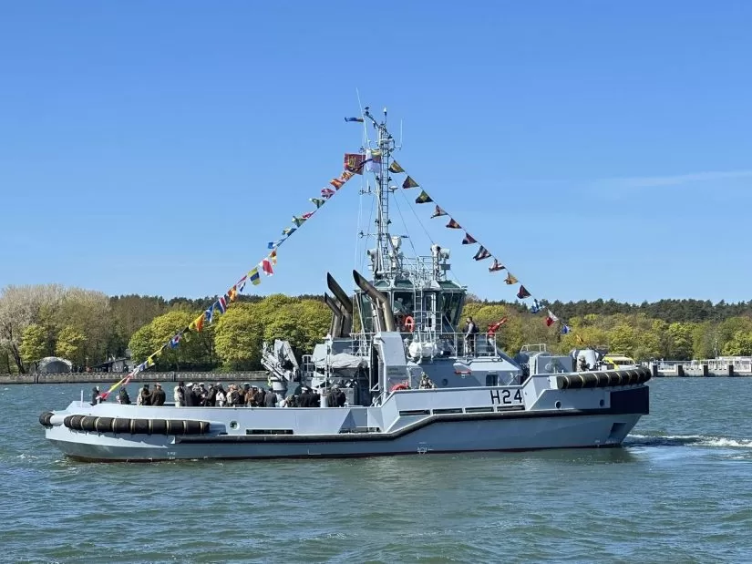

Rozdział 01
1927. Początek
Wszystko zaczęło się w 1927 roku, kiedy bracia Jan i Marinus Damen postanowili zbudować własną stocznię. Nie mieli wielkich planów — po prostu kochali morze i umieli budować statki. Z tej skromnej pasji wyrósł dziś jeden z największych koncernów stoczniowych na świecie: Damen Shipyards Group.
